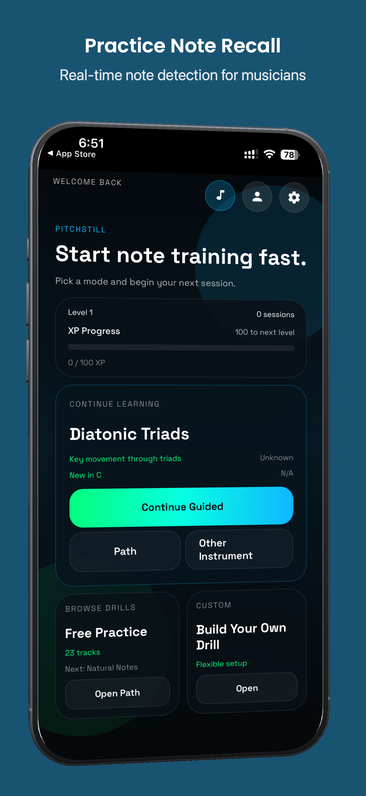
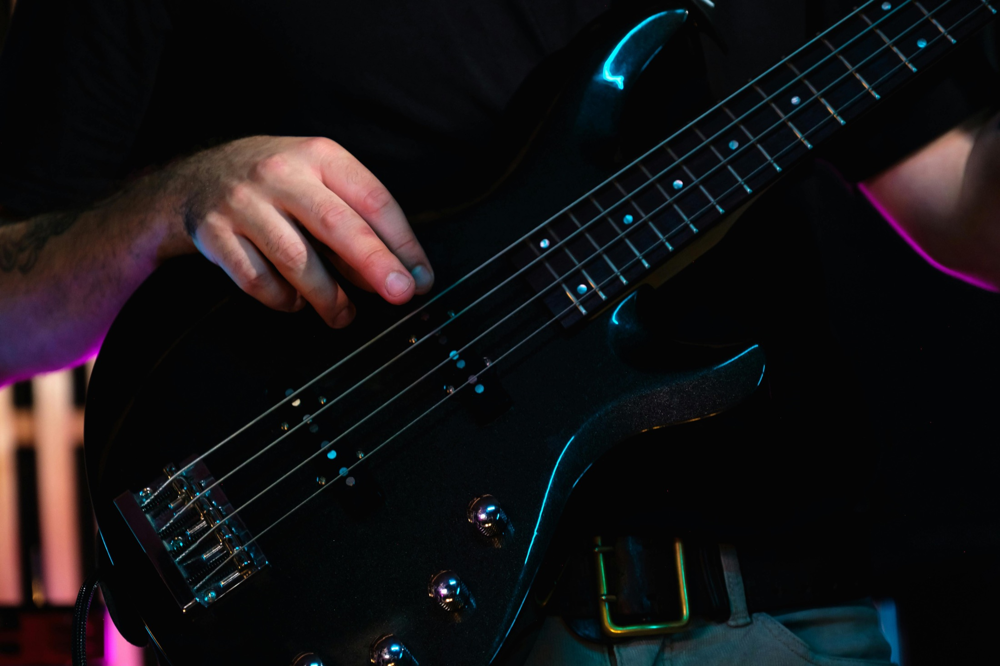
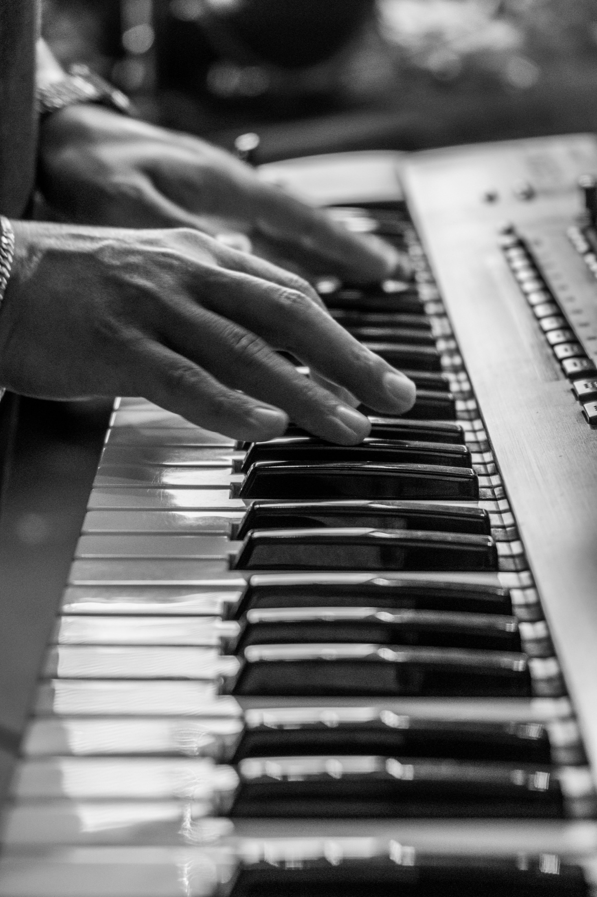
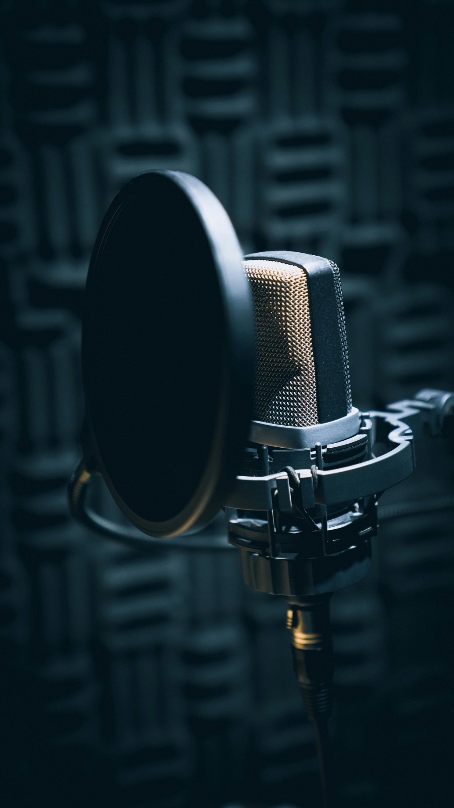
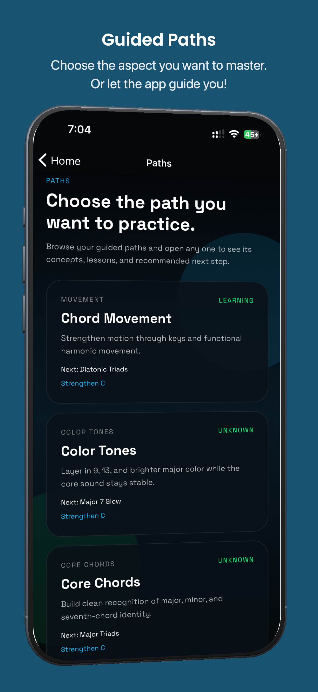

Set your range
Pick guitar, bass, piano, or vocals. Control strings, frets, notes, and octaves so sessions match your actual practice goals.
PitchStill trains active note recall on real instruments. Hear a target, play or sing it back, and get instant microphone feedback on guitar, bass, piano, or voice.
Free to download on iPhone, iPad, and Android.

A lot of musicians know shapes, patterns, note names, or chord formulas on paper. The harder skill is reacting fast enough to produce the target note on the actual instrument without hunting around.
PitchStill makes that gap measurable. It gives you a target, listens while you respond, and scores the physical result: accuracy, speed, streak, and consistency.
Each instrument page explains the setup, training flow, and practical use cases for that player.

Train note names, target notes, and chord tones inside specific strings and frets.

Build faster neck recall for roots, guide tones, and movement through changes.

Set a keyboard range and drill notes or harmony one target at a time.

Practice pitch production with immediate feedback during active sessions.
This short launch video gives a quick visual overview of PitchStill through app screens, motion, and product highlights.
PitchStill is designed for repetition. Choose an instrument, narrow the note pool, and train the exact pitch responses you want to improve.
Pick guitar, bass, piano, or vocals. Control strings, frets, notes, and octaves so sessions match your actual practice goals.
The app plays a note and shows the target. You play or sing it back while PitchStill listens in real time.
Review accuracy, score, streaks, reaction time, and session history to see what is getting sharper over time.
PitchStill is not a tuner and not a tap-the-answer quiz. It is a short loop for producing the note yourself and seeing whether you landed it.
Custom note pools for guitar, bass, piano, and vocal range training. Guitar and bass players can narrow drills by strings and frets.
The app gives the target first, then listens while you play or sing it back on the real instrument in front of you.
Every session contributes to score, accuracy, streaks, reaction time, XP, levels, session history, and long-term statistics.
Premium unlocks deeper guided paths, sequence drills, chord movement, inversions, and scale patterns with a one-time purchase.
Single-note drills are free. Premium adds unlimited sequence practice and guided harmonic paths for chord tones, inversions, scale patterns, and chord movement. Upgrade once and use it forever.

Standard and half-step-down practice with string and fret-range control.

Target note accuracy with ranges that fit your fretboard and technique.

Train within a chosen keyboard range and reinforce clean pitch recall.

Soprano, alto, tenor, and bass range options for direct voice training.



PitchStill uses the microphone during active sessions to detect pitch. Audio is not recorded, stored, or sent anywhere for training playback.
No. A tuner tells you what note you are already playing. PitchStill gives you the target first, then checks whether you can find it.
It overlaps with ear training, but the focus is active note recall: hearing or seeing a target and producing it on your actual instrument.
No. Songs and lessons give musical context. PitchStill is a focused drill for the smaller skill of landing notes quickly and accurately.
No. Microphone input is used during active sessions for pitch detection. Audio is not recorded, stored, or sent anywhere for training playback.
Download PitchStill on iPhone, iPad, or Android and start building faster, more accurate note recall.